AWS Glue es la herramienta ETL serverless completamente administrada que ofrece Amazon Web Services, con la cual podemos crear soluciones basadas en código tanto para la ingesta como para la transformación de los datos.
AWS Glue incluye un amplio conjunto de conectores tanto para los servicios AWS (RDS, S3, Redshift, etc...) como para servicios de terceros (MongoDB, MongoDB Atlas, conectores JDBC, etc...)
Cuando el esquema de los datos es desconocido, AWS Glue permite inferirlo. Para ello, hemos de construir un rastreador (crawler) para descubrir su estructura.
Con esa información, Glue crea un catálogo que contiene metadatos sobre las diferentes fuentes de datos (compatible con el Hive Catalog). AWS Glue es similar a Amazon Athena en que los datos permanecen en la fuente de datos.
Finalmente, Glue simplifica la orquestación de las ETL, permitiendo ejecutar miles de jobs en workflows y desarrollar y administrar los jobs de forma visual.
AWS Glue tiene varios componentes que podrían haberse dividido en varios servicios independientes, pero suelen trabajar todos juntos, por lo que AWS los ha agrupado en la familia AWS Glue.
Componentes de AWS Glue
A continuación, vamos a examinar los componentes principales de Glue relacionados con el procesamiento de datos.
Glue permite trabajar con diferentes motores de integración mediante Python, Spark y Ray para el procesamiento de datos almacenados en diferentes fuentes como S3 o RDS y registrados en el AWS Glue Data Catalog.
Las diferentes tareas ETL se facturan por DPUs (Data Processing Units) utilizadas y la cantidad de tiempo empleado en la ejecución (de forma similar a AWS Lambda). Aproximadamente, y dependiendo de la tecnología, cada DPU cuesta 0,44$ por hora. Más información en la página oficial de precios de AWS Glue.
La siguiente imagen muestra una posible configuración de DPUs, con dos de los motores Glue (un único nodo Python mediante shell a la izquierda, y un cluster de nodos Spark a la derecha):
Un shell de Python en Glue Python y un clúster de Spark
AWS Glue DataBrew es un herramienta visual de transformación de datos que nos permite aplicar transformaciones a los datos de forma visual, sin necesidad de escribir o administrar código (serverless).
Incluye más de 250 transformaciones de datos integradas, que se pueden ensamblar fácilmente de forma gráfica para crear una receta de DataBrew, lo que permite aplicar varias transformaciones a un conjunto de datos, como por ejemplo, limpiar y normalizar datos, eliminar o sustituir valores nulos, estandarizar columnas de fecha y hora para que se ajusten a un estándar, crear codificaciones, etc...
DataBrew incluye funcionalidades tanto para la elaboración de perfiles de datos (recopilación de estadísticas sobre las distintas columnas del conjunto de datos) como para la supervisión de la calidad de los datos. También incluye muchos tipos diferentes de transformaciones, como el formateo de datos, la ofuscación de datos personales, la división o unión de columnas, la conversión de zonas horarias, la detección y eliminación de valores atípicos, etc...
Conjunto de datos (dataset), que se almacenan en S3.
Receta (receipt), compuestas de uno o varios pasos de transformación. Estas recetas se pueden guardar, publicar, crear versiones, etc... y compartirlas con otros.
Trabajo (job), el cual se puede orquestar mediante Step Functions.
Los trabajos de DataBrew cuestan 1$ por sesión y luego 0,48$ por hora de nodo empleado.
AWS Glue también incluye un catálogo de datos para almacenar los metadatos que puede utilizarse para proporcionar una vista lógica de los datos almacenados físicamente en la capa de almacenamiento.
Este catálogo es compatible con el metastore Hive, lo que significa que puede utilizarse con cualquier sistema que pueda trabajar con un metastore Hive
Los objetos (como bases de datos y tablas) del catálogo se pueden referenciar directamente desde el código ETL. Además, cada tabla del catálogo contiene metadatos, como los títulos de las columnas y los tipos de datos de cada columna, una referencia a la ubicación en S3 de los datos que componen esa tabla, y detalles sobre el formato del archivo (como CSV).
Dentro del ecosistema de AWS, varios servicios pueden utilizar AWS Glue Data Catalog. Por ejemplo, Amazon Athena lo utiliza para permitir a los usuarios ejecutar consultas SQL directamente en los datos de Amazon S3, y Amazon EMR y el motor ETL de AWS Glue lo utilizan para permitir a los usuarios hacer referencia a objetos del catálogo (como bases de datos y tablas) directamente desde su código ETL.
El primer millón de datos almacenado en el catálogo es gratis, y a partir ahí, se cobra 1$ por cada 100.000 objetos que superen el millón. También se cobra por las solicitudes realizadas, siendo gratis el primer millón de cada mes y luego 1$ más por cada millón más.
Los rastreadores (crawlers) de AWS Glue son procesos que examinan una fuente de datos (como una ruta en un bucket de S3) e infieren automáticamente el esquema y otra información sobre esa fuente, rellenando automáticamente el catálogo de datos con la información relevante.
Por ejemplo, podemos dirigir un rastreador de AWS Glue a la ubicación de S3 donde hemos exportado los datos de la tabla de customers de nuestra base de datos retail_db. Cuando ejecutamos Glue Crawler, se examina una parte de cada uno de los archivos del origen, identifica el tipo de archivo (CSV o Parquet), utiliza un clasificador para inferir el esquema del archivo (encabezados y tipos de columnas) y, a continuación, añade esa información a una base de datos en el Glue Data Catalog.
AWS Glue Crawler
El uso de crawlers es opcional, ya que podemos añadir bases de datos y tablas a Glue Data Catalog utilizando la API de Glue o mediante sentencias SQL en Athena.
Si queremos que el crawler se conecte directamente a otros servicios, haremos uso de conexiones que también almacenaremos en el catálogo de Glue.
En los siguientes ejemplos vamos a utilizar los archivos de pdi_sales y pdi_product utilizados a lo largo del curso, y en especial con Pentaho.
Así pues, el primer paso es utilizar un bucket y crear una estructura de carpetas para cada archivo. Realmente cada carpeta debería contener un número indeterminado de archivos con el mismo formato con datos del mismo tipo.
Una vez cargados los datos en el bucket, vamos a utilizar un crawler para inferir las tablas.
Para ello, tras acceder a AWS Glue, y crearemos un nuevo crawler, al cual hemos llamado crawler-ventas-s3, le indicamos que todavía no tenemos mapeadas tablas en Glue y añadimos un nuevo datasource:
A la hora de crear la fuente de datos, tal y como hemos cargado los datos en S3, seleccionamos como fuente S3 e indicamos la ruta s3://iabd-glue/ventas/:
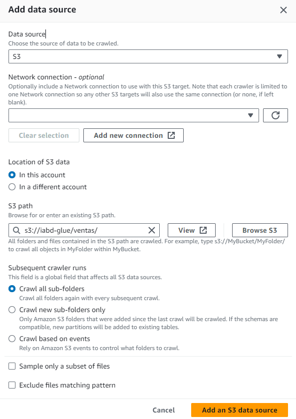
Hola Glue Crawler - Paso 2 - Configuración de la fuente S3
Tras añadirlo y pasar al siguiente paso, seleccionamos el rol LabRole y llegamos al paso 4 de configuración de la salida. En este paso, podemos utilizar una de las bases de datos que tengamos en el catálogo, y si no, crear una. Así pues, vamos a crear la base de datos iabd y posteriomente seleccionamos que ejecute el crawler bajo demanda:
Tras revisar la página de resumen, guardamos el crawler, y estaremos listo para pulsar sobre el botón "Run crawler" y ejecutar el proceso de inferencia de la tabla (el crawler puede tardar algunos minutos).
Mediante Glue Studio vamos a crear una ETL visual de forma similar a como hemos realizado con Pentaho para realizar un join y cargar el resultado en una nueva tabla que almacenaremos en el catálogo.
Y para terminar, vamos a almacenar el resultado en S3 en formato Parquet particionando los datos por país (country) y crear una tabla en el catálogo que apunte a dichos datos.
Para ello, primero elegimos para el destino el servicio S3 y configuramos el nodo padre, el formato Parquet y la ruta de destino (en nuestro caso, le ponemos una nueva carpeta ventas-productos):
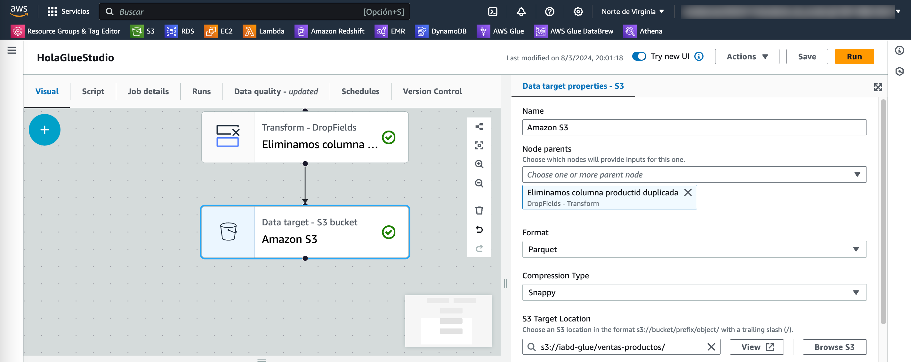
Hola Glue Studio - Eliminando columna duplicada
Y a continuación le pedimos que guarde una tabla en el catálogo en la base de datos iabd en una nueva tabla que llamamos ventas_productos:
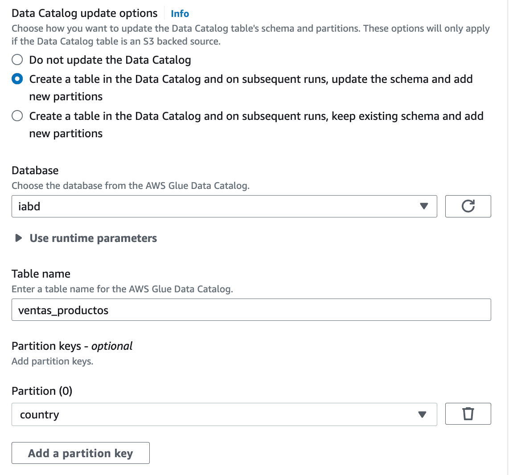
Hola Glue Studio - Eliminando columna duplicada
Tras grabar, ya tenemos lista nuestra ETL y la ejecutamos mediante el botón Run naranja situado en la esquina superior derecha.
Si vamos a la pestaña Runs de nuestra ETL, podremos ver el estado y tiempo de ejecución (2m50s lo cual es mucho tiempo para tan poca cantidad de datos, pero ya hemos visto en sesiones previas que el procesamiento distribuido tiene una sobrecarga que, en volúmenes pequeños de datos, penaliza).
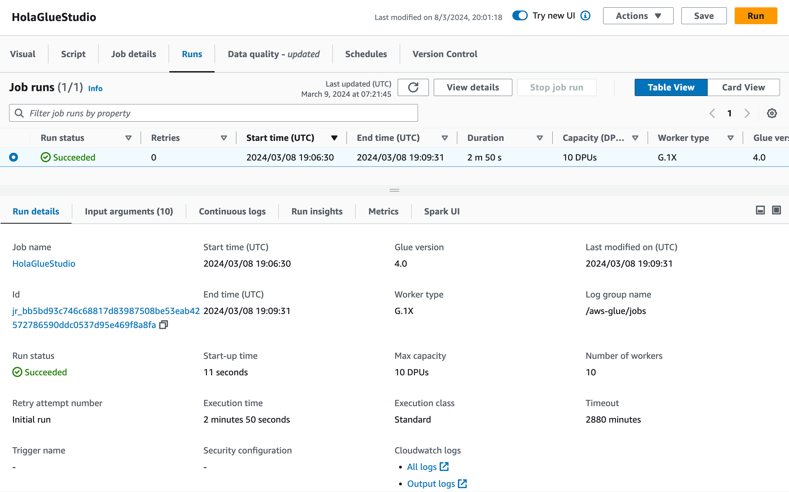
Hola Glue Studio - Estadísticas de la ejecución
Y el último paso es comprobar cómo en S3 se han creado los datos particionados por país:
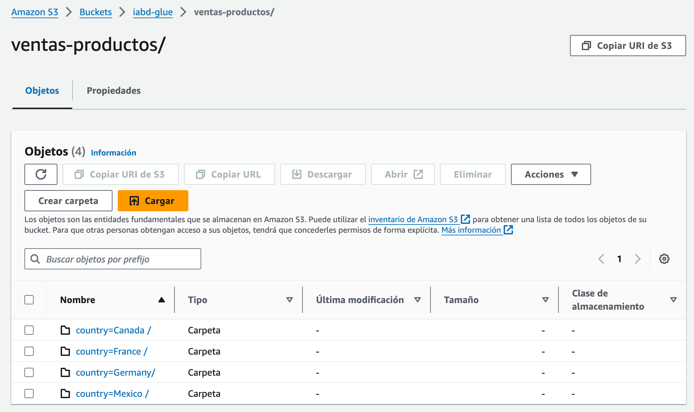
Hola Glue Studio - Datos particionados por país
Y tenemos disponible la tabla ventas-producto en el catálogo:
Hola Glue Studio - Tabla ventas-producto en el catálogo
En este caso, para utilizar un conjunto de datos más voluminoso y con una casuística más amplia, nos centraremos en un dataset de descubrimiento de fármacos de ChEMBL.
El primer paso es entrar a Glue DataBrew y crear el proyecto de muestra con los datos de CHEMBL, utilizando el LabRole de AWS Academy:
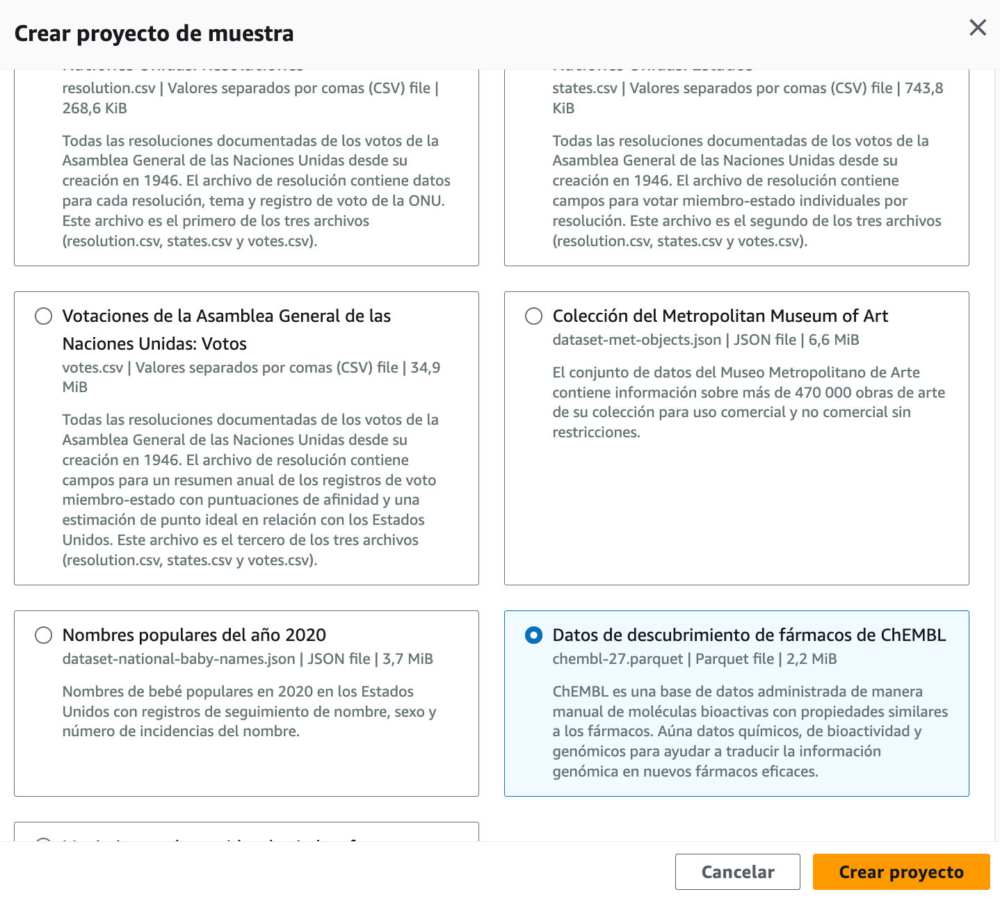
Hola DataBrew - Creación del proyecto de muestra
Nada más crear el proyecto, se creará una sesión que tarda alrededor de un minuto en instanciarse.
Cuidado con las sesiones
Cada sesión se factura por franjas de 30 minutos, a 1$. Por ejemplo, si utilizamos 40 minuto serían 2$.
Cabe destacar que las primeras 40 sesiones interactivas son gratuitas para los usuarios de DataBrew por primera vez.
Tras crearse la sesión, veremos un interfaz de trabajo muy parecido al de PowerQuery con los datos mostrados de forma tabular, con un menu superior con las operaciones/transformaciones disponible, y donde podemos observar como tenemos 39 columnas y que sólo se están mostrando 500 columnas. Para cada columna, podemos ver un gráfico con diversa información estadística y luego datos de ejemplo de dicha columna. Finalmente, en la parte derecha tenemos los pasos (la receta) que se aplican al dataset:
Una vez tenemos el entorno listo, vamos a realizar un conjunto de transformaciones que añadiremos a nuestra receta:
El primer paso será eliminar la última columna, tid_fixed que tiene todos los valores nulos. Para ello, bien desde el menú Columna, o con los tres puntos de la propia columna (...) seleccionamos la opción de Eliminar.
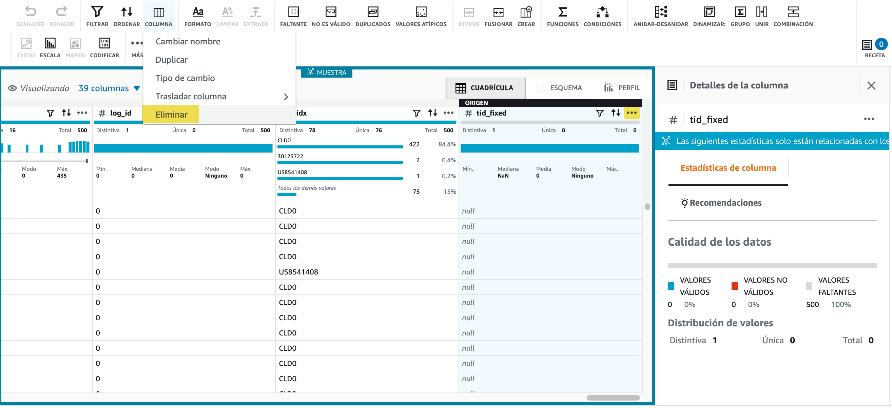
Hola DataBrew - Borrando una columna
Tras aplicar los cambios, en la zona de la receta, aparecerá el paso aplicado.
A continuación, vamos a filtrar datos. Por ejemplo, seleccionamo la columna curated_by y seleccionamos para que sea exactamente Autocuration. En la parte derecha podremos ver una pequeña estadística de los valore existentes y si pulsamos sobre Vista previa, se marcarán en rojo las filas que se eliminarán.
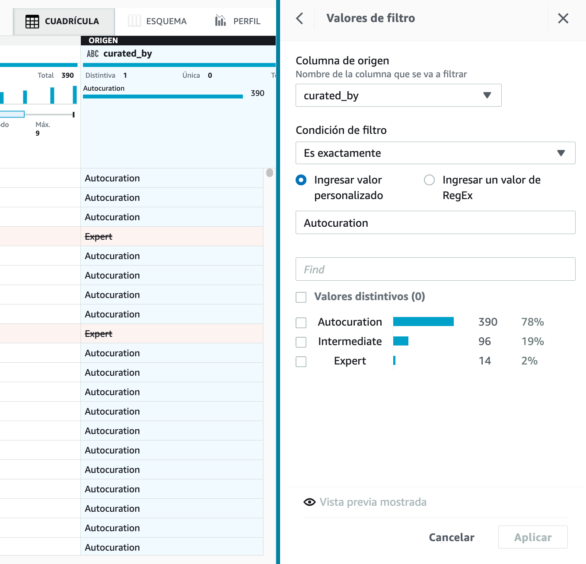
Hola DataBrew - Filtrando datos
Ahora nos vamos a centrar en la gestión de los valores nulos. Para ello, en la columna assay_organism cambiaremos los nulos por Unknown, utilizando el menú Faltante y la opción de Rellenar con valor personalizado:
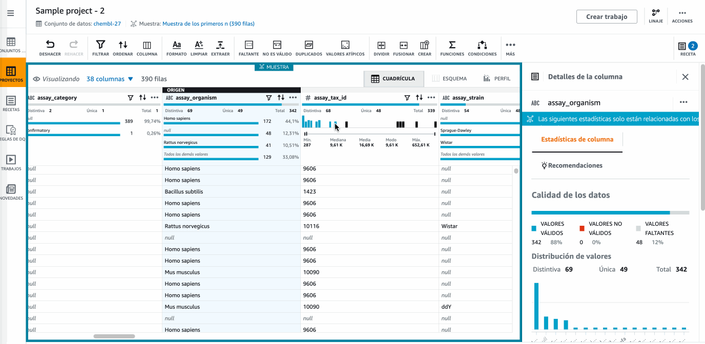
Hola DataBrew - Cambiando los nulos
Si trabajamos con fechas es muy común crear columnas nuevas con información más útil. En nuestro caso, vamos a añadir una columna que llamaremos Mes con el nombre del mes que conseguimos con la función MONTHNAME sobre la columna updated_on. Para ello, desde el menú Funciones seleccionamos la función de fecha que nos interesa y configuramos los valores:
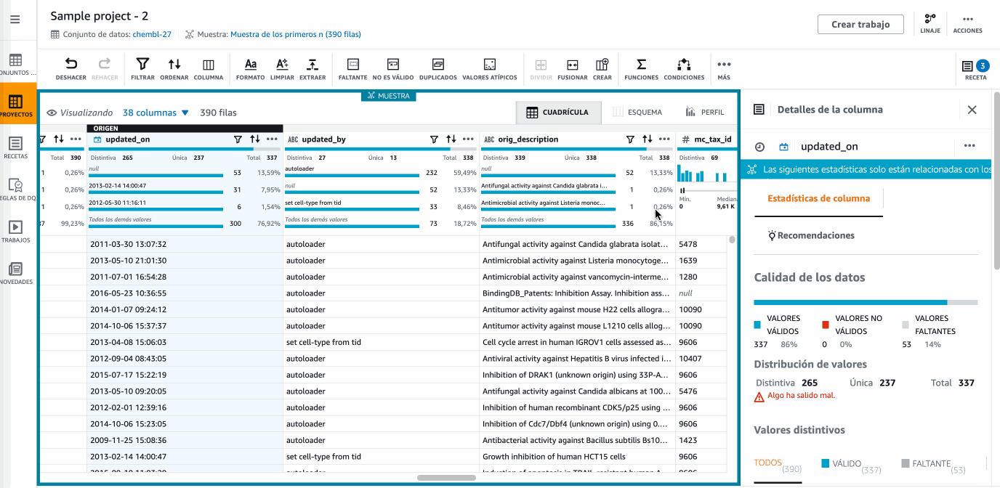
Hola DataBrew - Utilizando funciones
Una vez ya tenemos nuestra receta completa con todos los pasos necesarios en nuestra transformación, llega el momento de publicarla para crear una versión de la misma y posteriormente poder reutilizarla.
Si vamos al menú de las recetas, seleccionamos la receta recién publicada, en mi caso Sample recipe-2, y creamos un trabajo (job) con la misma, en el cual, tras darle un nombre y seleccionar el dataset, vamos a guardar el resultado en S3 tanto en formato CSV como en formato Parquet particionado por la columna Mes, y finalmente seleccionamos el rol LabRole:
Hola DataBrew - Creando un job
Tras la creación, el job se ejecutará automáticamente. Si vamos a S3 veremos cómo ha creado una carpeta por cada salida y dentro estarán los datos transformados.
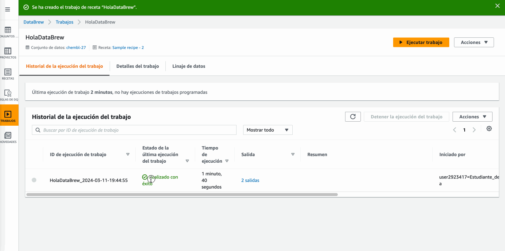
Hola DataBrew - Resultado del job
Precio de ejecución
A la hora de diseñar una receta, tenemos que pagar por la sesión. Una vez creada, AWS cobrará por cada ejecución de los jobs dependiendo de la cantidad de nodos asignados, a 0,48$ por nodo/hora facturados por minutos. Más información en https://aws.amazon.com/es/glue/pricing/
Entre las diferentes funcionalidades extra que nos ofrece DataBrew es poder programar la ejecución de los jobs (por ejemplo, determinados días/horas o mediante expresiones CRON), así como visualizar el linaje de los datos de los job:
Crea una tabla en el Data Catalog mediante un crawler
Crea una ETL que realice un Join entre ventas-productos para añadir el nombre del fabricante y almacena el resultado en S3 en la carpeta ventas-productos-fabricantes y genera una nueva tabla llamada ventas_productos_fabricantes.
(RABDA.1 / CEBDA.1c, CEBDA.1d / 2p) Mediante Glue DataBrew, sigue el caso de uso de Hola DataBrew y añade los siguientes pasos:
Elimina también la columna log_id (menu Columna).
Filtra también por HomoSapiens la columna mc_organism (menú Filtrar).
Rellenar los valores nulos de la columna assay_source con el valor más frecuente (menu Faltante).
Pasar a mayúsculas la columna assay_cell_type (menú Formato).
A continuación, publica la receta y crea y ejecuta el job de forma similar, exportando los datos a S3 tanto en formato CSV como en Parquet particionado por la columna Mes.